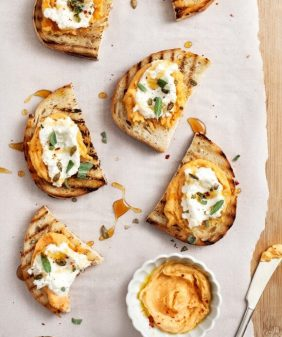

The Little Kitchen
A family food blog with easy, well tasted, family approved recipes!
Lunch Ideas

- Healthy Lunch Wraps
- Best Egg Salad
- Veggie Grain Bowl
- Sesame Soba Noodles

Ingredients :
- Sesame Dressing:
- ¼ cup rice vinegar
- 2 tablespoons tamari, more for serving
- ½ teaspoon toasted sesame oil
- 1 teaspoon grated ginger
- 1 garlic clove, grated
- ½ teaspoon maple syrup or honey
- For the Soba Noodles:
- 6 ounces soba noodles*, see note
- Sesame oil, for drizzling
- 2 avocados, sliced
- Squeezes of lemon
- 2 cups blanched snap peas
- ¼ cup edamame
- 1 watermelon radish or 2 red radishes, very thinly sliced
- 1/4 cup fresh mint leaves
- Sesame seeds
Instructions :
- Make the dressing: In a small bowl, combine the vinegar, tamari, sesame oil, ginger, garlic, and honey. Set aside.
- Bring an unsalted pot of water to a boil and cook the soba noodles according to package directions. Drain and rinse well in cold water. This helps to remove starches that cause clumping. Toss the noodles with the dressing and divide into 2 to 4 bowls. Squeeze fresh lemon juice onto the avocado slices and add to the bowls along with the snap peas, edamame, radish, mint, and sprinkle with sesame seeds. Drizzle with more tamari or sesame oil, if desired.